I built the core of a physically based path tracer. Camera rays are generated through a pinhole camera model and intersected with triangles and spheres. A bounding volume hierarchy built with a binned surface area heuristic makes those intersection queries logarithmic instead of linear, so scenes with hundreds of thousands of triangles render in about a second with normal shading. On top of that I implemented a Lambertian BSDF and estimated the rendering equation with Monte Carlo integration: first direct lighting (by uniform hemisphere sampling and by importance sampling the lights), then full global illumination by recursively tracing BSDF-sampled paths, terminated without bias by Russian roulette. Finally, adaptive sampling stops tracing a pixel once a 95% confidence interval on its brightness is tight enough, which concentrates samples where the image is actually noisy.
The main thing I took away is how much of rendering is variance management. Every part after Part 2 is an unbiased estimator of the same integral; the differences between them (hemisphere vs. light sampling, cosine-weighted BSDF sampling, Russian roulette, adaptive sampling) are almost entirely about how much noise you get for a given number of rays. The other lesson was coordinate frames: the BSDF lives in a local frame where the normal is +z, while rays and lights live in world space, and keeping track of which vector is in which frame is where most of the subtle bugs would come from.
To produce some of the comparison figures without keeping several versions of the code, I added a few environment-variable switches that are all off by default: PT_NORMAL_SHADING (normal-shaded output for Parts 1 and 2), PT_NO_BVH (one leaf node, i.e. the starter code's linear scan, for the timing comparison), PT_NO_RR (fixed-depth paths without Russian roulette), and PT_INDIRECT_ONLY (drops zero-bounce and first-bounce direct light). Fixed-sample renders pass -a 32 0, which turns adaptive sampling off so every pixel gets exactly -s samples. Every image here is 480x360 (dragon is 480x480) and was saved with -f.
PathTracer::raytrace_pixel(x, y) estimates the integral of radiance over one pixel. For each of the ns_aa samples it picks a uniformly random point inside the pixel, \((x, y) + (\xi_1, \xi_2)\), divides by the image width and height to get normalized coordinates in \([0,1]^2\), and asks the camera for a ray through that point. It sets the ray's depth to max_ray_depth, calls est_radiance_global_illumination, and averages the returned radiance into sampleBuffer. The number of samples actually taken goes into sampleCountBuffer (this matters once adaptive sampling is on).
Camera::generate_ray(x, y) maps the normalized image point onto a virtual sensor on the \(z=-1\) plane of camera space. The sensor spans \([-\tan\frac{hFov}{2}, \tan\frac{hFov}{2}]\) horizontally and \([-\tan\frac{vFov}{2}, \tan\frac{vFov}{2}]\) vertically, so the point is
\[ \mathbf{d}_{cam} = \left((2x-1)\tan\frac{hFov}{2},\; (2y-1)\tan\frac{vFov}{2},\; -1\right). \]
The camera sits at the origin of camera space, so the ray direction is just this point. I rotate it into world space with the camera-to-world matrix c2w, normalize it, and use the camera position pos as the origin. The ray's min_t and max_t are set to the near and far clipping distances so anything outside the view frustum's depth range is ignored.
A ray is \(\mathbf{o} + t\mathbf{d}\), valid only for \(t \in [\text{min\_t}, \text{max\_t}]\). Both primitives follow the same contract: if they find a hit inside that range, they shrink max_t to the hit's \(t\). Because max_t only ever shrinks, testing primitives one after another automatically keeps the nearest hit, and anything farther than the current best is rejected immediately.
Triangles (Möller–Trumbore). Any point in the triangle's plane can be written with barycentric coordinates as \((1-b_1-b_2)\mathbf{p}_1 + b_1\mathbf{p}_2 + b_2\mathbf{p}_3\). Setting that equal to the ray gives three linear equations in the three unknowns \(t, b_1, b_2\). With \(\mathbf{e}_1 = \mathbf{p}_2-\mathbf{p}_1\), \(\mathbf{e}_2 = \mathbf{p}_3-\mathbf{p}_1\), \(\mathbf{s} = \mathbf{o}-\mathbf{p}_1\), \(\mathbf{s}_1 = \mathbf{d}\times\mathbf{e}_2\) and \(\mathbf{s}_2 = \mathbf{s}\times\mathbf{e}_1\), Cramer's rule gives
\[ \begin{bmatrix} t \\ b_1 \\ b_2 \end{bmatrix} = \frac{1}{\mathbf{s}_1\cdot\mathbf{e}_1}\begin{bmatrix} \mathbf{s}_2\cdot\mathbf{e}_2 \\ \mathbf{s}_1\cdot\mathbf{s} \\ \mathbf{s}_2\cdot\mathbf{d} \end{bmatrix}. \]
If the denominator is (nearly) zero the ray is parallel to the triangle and there is no hit. Otherwise the point is inside the triangle exactly when \(b_1 \ge 0\), \(b_2 \ge 0\) and \(b_1 + b_2 \le 1\), and the hit counts only if \(t\) is inside the ray's valid range. The nice thing about this method is that it gets the barycentric coordinates for free, and I reuse them to interpolate the three vertex normals, \((1-b_1-b_2)\mathbf{n}_1 + b_1\mathbf{n}_2 + b_2\mathbf{n}_3\), for smooth shading. intersect then fills in \(t\), the normal, the primitive pointer and the BSDF; has_intersection does the same test but records nothing.
Spheres. Substituting the ray into \(|\mathbf{p}-\mathbf{c}|^2 = R^2\) gives the quadratic \((\mathbf{d}\cdot\mathbf{d})t^2 + 2(\mathbf{o}-\mathbf{c})\cdot\mathbf{d}\,t + |\mathbf{o}-\mathbf{c}|^2 - R^2 = 0\). A negative discriminant means a miss. Otherwise I take the smaller root if it is in range, else the larger root (the ray starts inside the sphere), else report a miss. The normal is \((\mathbf{p}-\mathbf{c})/R\), normalized.
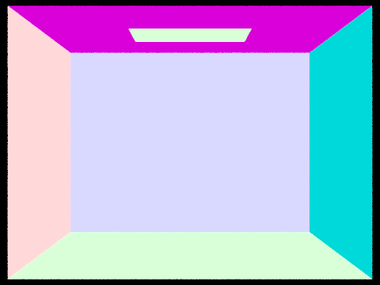 |
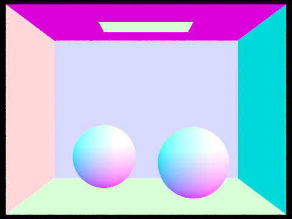 |
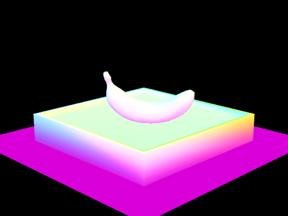 |
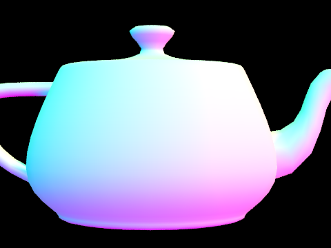 |
Normal shading (RGB = normal × 0.5 + 0.5), 16 samples per pixel.
construct_bvh(start, end, max_leaf_size) works recursively on a range of the primitive vector. It computes the bounding box of all primitives in the range (which becomes the node's box) and a second box around just their centroids. If the range has at most max_leaf_size primitives, the node is a leaf and stores start/end. Otherwise it picks a split, reorders the range in place with std::partition so the left primitives come first, and recurses on the two halves. Since the reordering is in place, each node's primitives are always one contiguous slice of the vector, so leaves can simply point into it with iterators.
Splitting heuristic: binned SAH. Rather than splitting at the midpoint or the mean centroid, I use the surface area heuristic. If a ray hits a parent box, the chance that it also hits a child box is about \(SA_{child}/SA_{parent}\), so the expected number of primitive tests after a split is proportional to \[ C = SA(L)\,N_L + SA(R)\,N_R. \] For each of the three axes I drop the primitive centroids into 16 equal-width buckets spanning the centroid box, keeping each bucket's count and bounding box. Each of the 15 bucket boundaries is a candidate split plane; a prefix sweep and a suffix sweep over the buckets give \(SA\) and \(N\) for both sides of every candidate in \(O(\text{buckets})\) time per axis. I keep the cheapest split over all axes and partition the primitives by which bucket their centroid falls into. Compared with a midpoint split, SAH avoids big, mostly-empty child boxes and puts the split where it separates geometry, which shows up as fewer intersection tests per ray.
Degenerate cases: a candidate where one side is empty is never chosen, so neither child is empty and the recursion always makes progress. If all centroids are the same point (the centroid box has zero extent on every axis) no plane can separate them, so I split the range in half by index. Without that fallback the recursion would loop forever on the same set.
BBox::intersect uses the slab method: for each axis, the ray crosses the two planes at \(t = (\text{min}_i - o_i)/d_i\) and \((\text{max}_i - o_i)/d_i\). After ordering each pair, the ray is inside the box between the largest entry time and the smallest exit time. The box is hit if that interval is non-empty and overlaps the ray's \([\text{min\_t}, \text{max\_t}]\). A ray that starts inside the box counts as a hit.
BVH traversal tests the node's box first and returns immediately on a miss. At a leaf it tests every primitive in the leaf. has_intersection (used for shadow rays) returns as soon as anything is hit. intersect needs the closest hit, so it cannot stop early: it visits the child whose box the ray enters first, and then the other child. Visiting the near child first is a cheap optimization: a hit there shrinks max_t, and the far child's box test then often fails without touching any of its primitives.
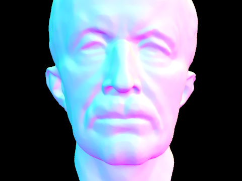 |
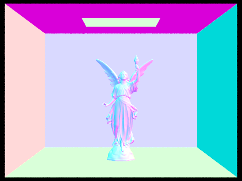 |
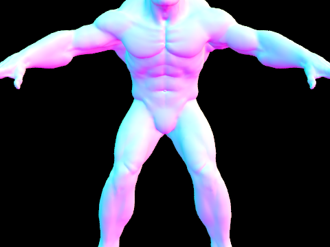 |
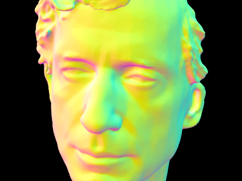 |
| Scene | Triangles | Time, no BVH (s) | Time, BVH (s) | Speedup | Tests/ray, no BVH | Tests/ray, BVH | BVH build (s) |
|---|---|---|---|---|---|---|---|
| teapot.dae | 2,464 | 3.25 | 0.0116 | 280× | 166.3 | 1.44 | 0.0037 |
| cow.dae | 5,856 | 5.97 | 0.0097 | 616× | 304.5 | 1.50 | 0.0097 |
| beetle.dae | 7,558 | 7.52 | 0.0095 | 791× | 405.8 | 1.41 | 0.0126 |
| CBbunny.dae | 28,588 | 37.52 | 0.0161 | 2,331× | 1,849.3 | 2.39 | 0.0558 |
| maxplanck.dae | 50,801 | 59.32 | 0.0123 | 4,823× | 2,831.7 | 1.81 | 0.1007 |
Normal shading, 480x360, 1 sample per pixel, 16 threads. "No BVH" is a single leaf holding every primitive (PT_NO_BVH=1).
Without the BVH every camera ray that enters the scene's bounding box is tested against every triangle, so render time grows linearly with the triangle count: 3.25 s for the 2,464-triangle teapot up to 59.3 s for the 50,801-triangle Max Planck bust, with the average tests per ray tracking the triangle count (about 166 to 2,832). With the BVH, all five scenes render in 0.01 to 0.02 s and need only 1.4 to 2.4 primitive tests per ray, no matter how big the mesh is. The traversal discards almost all of the geometry with a few cheap box tests and ends up testing only the handful of triangles near the ray. As a result the speedup grows with scene size, from 280× on the teapot to about 4,800× on Max Planck. Building the BVH costs at most a tenth of a second, which pays for itself on the first frame. CBbunny needs the most tests per ray among the BVH renders. That is probably because nearly every pixel hits geometry (the Cornell box walls fill the frame), and the large wall triangles have bounding boxes that overlap much of the scene.
The Lambertian BSDF scatters light equally in every direction, so \(f = \rho/\pi\) where \(\rho\) is the albedo (reflectance). The \(1/\pi\) is what makes the surface conserve energy: \(\int_{H^2} \frac{\rho}{\pi}\cos\theta\,d\omega = \rho\). Zero-bounce radiance is just the emission of whatever the camera ray hits, isect.bsdf->get_emission(), which is non-zero only on lights.
Both direct lighting functions estimate the reflection equation at the hit point \(p\),
\[ L_{out}(p, \omega_o) = \int_{H^2} f(\omega_i \to \omega_o)\, L_i(p, \omega_i)\, \cos\theta_i \, d\omega_i \approx \frac{1}{N}\sum_{j=1}^{N} \frac{f(\omega_j\to\omega_o)\, L_i(p,\omega_j)\cos\theta_j}{p(\omega_j)}. \]
Both start by building a local frame at the hit point where the normal is \(+z\) (o2w and its transpose w2o), so \(\cos\theta\) is just the z-component of a local direction. The BSDF is always evaluated with local vectors, and rays are always cast with world vectors. Every ray cast from the surface has min_t = EPS_F so it does not immediately re-hit the surface it starts on.
Uniform hemisphere sampling (estimate_direct_lighting_hemisphere). Draw \(N = (\#\text{lights})\times\)ns_area_light directions uniformly over the hemisphere, so \(p(\omega) = 1/2\pi\). For each one, convert to world space and cast a ray. If it hits something, the incoming radiance is that object's emission (zero unless it is a light), and the sample contributes \(f \cdot L_e \cdot \cos\theta \cdot 2\pi\). The sum is divided by \(N\).
Light importance sampling (estimate_direct_lighting_importance). Loop over the lights instead. A delta light (point, spot, directional) gives the same sample every time, so it is sampled once; an area light is sampled ns_area_light times. sample_L returns the light's radiance along with a world-space direction toward a random point on the light, the distance to it, and the pdf of that direction (with respect to solid angle). If the direction is below the surface (\(\cos\theta \le 0\)) the light cannot illuminate the point, and I skip it without casting a ray. Otherwise I cast a shadow ray with max_t = distToLight - EPS_F, so only objects strictly between the point and the light count as blockers, using has_intersection because any blocker is enough. Unblocked samples contribute \(f\cdot L\cdot\cos\theta / p\), and each light's sum is divided by its own sample count before the lights are added together.
one_bounce_radiance calls one or the other depending on direct_hemisphere_sample (the -H flag).
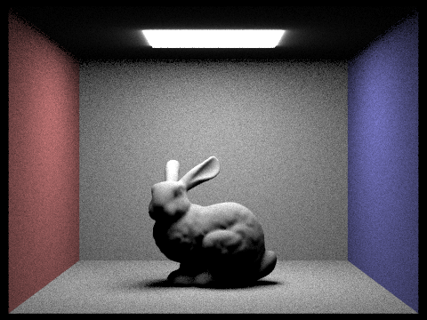 |
|
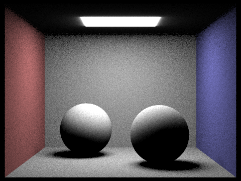 |
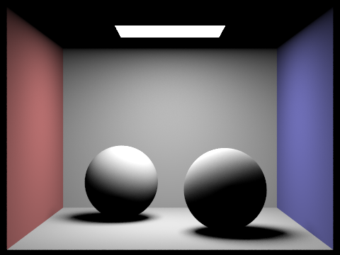 |
Direct lighting only (-m 1), 64 samples per pixel, 32 light rays.
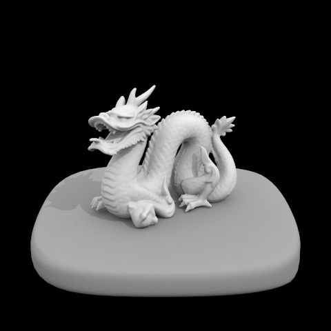
-l 1 |
-l 4 |
-l 16 |
-l 64 |
CBbunny, light importance sampling, 1 sample per pixel, direct lighting only.
With 1 light ray, each pixel's shadow ray either reaches the light or is blocked, so every pixel in the penumbra under the bunny is close to fully lit or fully black. The soft shadow looks like salt-and-pepper speckle, and even the fully lit floor and walls are grainy because the sampled point on the light (and therefore its distance and angle) changes from pixel to pixel. At 4 light rays each pixel averages four visibility tests, so it can show partial shadow; the penumbra starts to read as a gradient but is still clearly grainy. At 16 rays the shadow under the bunny is a recognizable smooth falloff with fine noise, and at 64 rays it is nearly clean: the hard contact shadow right under the bunny fades smoothly into the lit floor. The noise drops roughly as \(1/\sqrt{N}\), so each 4× increase in light rays roughly halves it. The rest of the image (aliased edges, uneven per-pixel brightness on the bunny) stays the same throughout, because that comes from having only 1 camera sample per pixel, which more light rays cannot fix.
With the same number of samples (64 per pixel, 32 per light), uniform hemisphere sampling is much noisier than light sampling. Hemisphere sampling picks directions without knowing where the light is, and the area light covers only a small solid angle from most points, so most samples return zero and a few return a lot. That high variance shows up as grain over every surface, and it is worst in the soft shadows, where only part of the light is visible and the hit rate is even lower. Light sampling puts every sample on the light, so the only randomness left is whether that point on the light is blocked and where on the light it lands. The walls and floor come out smooth, and the penumbrae under the bunny and spheres are clean gradients. Light sampling is also the only one of the two that can render point lights at all: a randomly chosen direction hits a point with probability zero. Both estimators converge to the same image, but light sampling needs far fewer samples to get there. One visible difference that is not noise: hemisphere sampling lights up the ceiling around the area light, while light sampling leaves it dark. The emissive mesh returns its emission no matter which side a hemisphere ray hits it from, but sample_L treats the area light as one-sided and pointing down (the starter code notes this "glow" difference).
Sampling the diffuse BSDF. DiffuseBSDF::sample_f draws \(\omega_i\) from a cosine-weighted hemisphere, \(p(\omega_i) = \cos\theta_i/\pi\), using the provided sampler, which also reports the pdf. It returns \(f = \rho/\pi\). Cosine weighting matches the \(\cos\theta\) factor in the rendering equation, so for a diffuse surface the weight \(f\cos\theta/p\) is just \(\rho\), a constant, which keeps the variance of each bounce low.
Indirect lighting. est_radiance_global_illumination intersects the camera ray with the scene, adds zero-bounce radiance (emission), and then adds at_least_one_bounce_radiance. Camera rays start with depth = max_ray_depth, and each bounce decrements it, so depth is the number of bounces the path is still allowed. at_least_one_bounce_radiance(r, isect) works like this:
one_bounce_radiance, the direct light at this hit point. Indirect light arriving here will be counted by the recursion, and the emission of the next hit is never added on the way back up, because that light is already counted by this direct lighting term. Adding it again would count light sources twice.depth == 1, the path has used its last bounce, so stop.max_ray_depth > 1). After that, the path continues with probability \(p_{rr} = 0.65\), i.e. a termination probability of 0.35.min_t = EPS_F and depth - 1. If it misses the scene, nothing more is added.
When isAccumBounces is false (-o 0), only light that has bounced exactly max_ray_depth times is kept: zero-bounce emission only when max_ray_depth = 0, and otherwise only the direct lighting term at the last vertex (depth == 1). The intermediate vertices still trace the path but contribute nothing themselves.
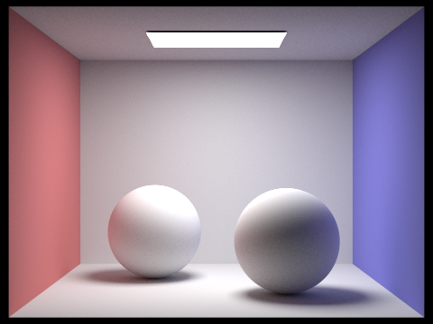 |
-m 100) |
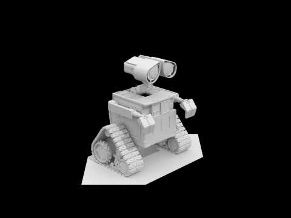 |
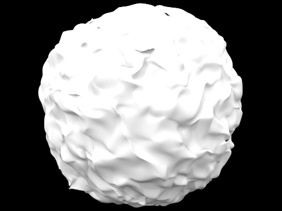 |
1024 samples per pixel, 4 light rays, max ray depth 5 unless noted.
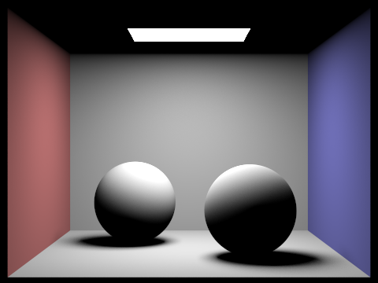 -m 1) |
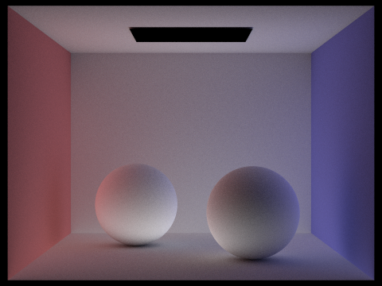 |
CBspheres_lambertian, 1024 samples per pixel, 4 light rays.
The direct-only image is all hard contrast. Every surface that can see the light is lit, but the ceiling, the undersides of the spheres, and the shadows on the floor are completely black, and the walls show no influence from each other. The indirect-only image (I set PT_INDIRECT_ONLY=1, which skips the emitted light and the first vertex's direct lighting but keeps everything after) is almost the complement. The light itself is black and the overall image is dimmer, but light reaches everywhere, including the ceiling and the sphere bottoms, with very soft gradients and no hard shadows. It also shows the color bleeding clearly: each sphere's left side is pink from the red wall and its right side bluish from the blue wall. Adding the two gives the full global illumination render. The indirect image is also visibly grainier than the direct one at the same 1024 samples, because each of its samples depends on a random multi-bounce path rather than a direct shadow ray to the light.
isAccumBounces=false)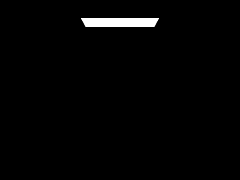 -m 0: zero-bounce (emission) only |
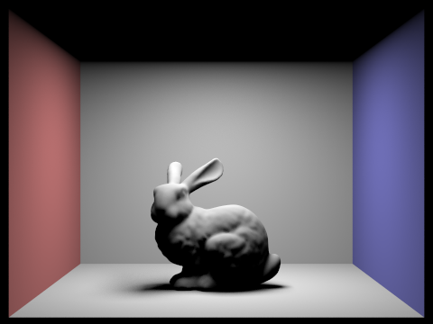 -m 1: bounce 1 only |
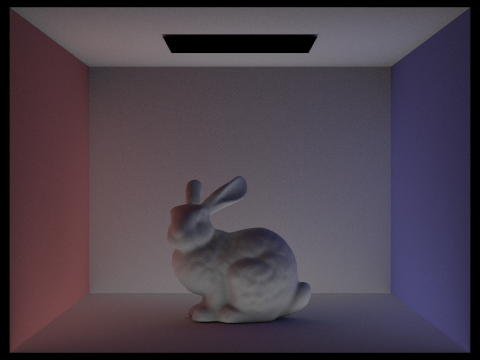 -m 2: bounce 2 only |
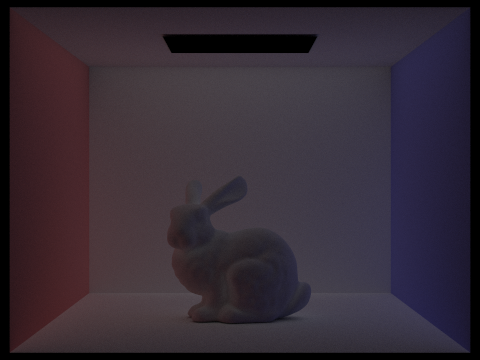 -m 3: bounce 3 only |
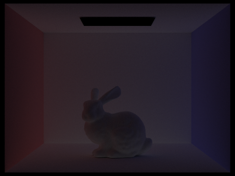 -m 4: bounce 4 only |
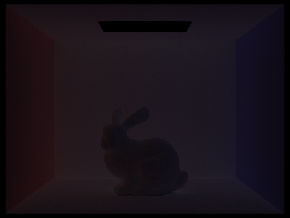 -m 5: bounce 5 only |
1024 samples per pixel, 4 light rays, no Russian roulette (PT_NO_RR=1 -o 0).
Bounce 0 is just the area light. Bounce 1 is ordinary direct lighting: everything the light can see is lit, the ceiling is completely black (the light points down, so the ceiling never receives direct light), and the bunny casts a fairly hard-edged dark shadow.
The 2nd bounce is light that reflected off one surface before reaching the surface we see. That is exactly what direct lighting leaves out: the ceiling is now clearly lit by light reflected up from the floor and walls, and the bunny's shadowed side and the floor in its shadow get light too. This bounce also carries color bleeding: the bunny's left side picks up a red tint from the red wall and its right side a blue tint from the blue wall, and the floor and ceiling near each wall are tinted the same way. The 3rd bounce is dimmer (each diffuse bounce multiplies the light by an albedo below 1) and much smoother. After two reflections the light arriving at a point comes from nearly everywhere in the box, so this bounce is close to an even, softly tinted fill light with only gentle gradients, and the 4th and 5th bounces continue the same trend, each dimmer and flatter than the last.
Compared with rasterization, these higher bounces are what make the image look physically lit. A rasterizer shades each surface only from the lights it can see directly (bounce 1), and usually fakes everything else with a constant ambient term, which is the same everywhere and has no color. Bounces 2 and 3 replace that ambient term with real light: shadows are no longer pitch black but filled with bounced light, surfaces facing away from the light still have shading that shows their shape, the ceiling is visible, and nearby colored surfaces tint each other. Together they add a large fraction of the total brightness of the final image.
| Only the m-th bounce | Accumulated bounces 0..m | |
|---|---|---|
-m 0 |
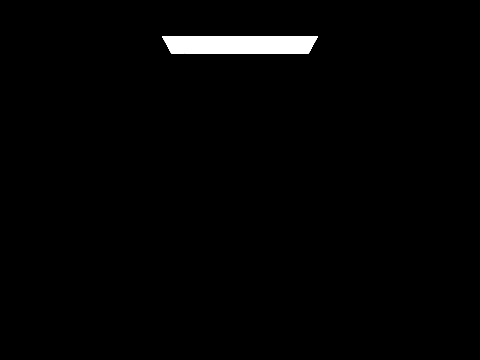 |
|
-m 1 |
||
-m 2 |
||
-m 3 |
||
-m 4 |
||
-m 5 |
CBbunny, 1024 samples per pixel, 4 light rays, no Russian roulette.
The accumulated image at depth \(m\) is the sum of the unaccumulated images 0 through \(m\). At -m 1 the two columns differ only by the light itself. From -m 2 on, the accumulated renders fill in: the ceiling appears, the bunny's shadow and shadowed side lighten, and the red and blue tints spread onto the floor, ceiling and bunny. The individual bounces get dimmer quickly, so each additional depth changes the accumulated image less. The mean pixel value (8-bit, after tone mapping) of the unaccumulated images falls 98.7 → 69.3 → 46.7 → 30.5 → 20.3 for bounces 1 to 5, while the accumulated image rises 102.6 → 130.1 → 137.0 → 139.7 → 140.8. By depth 3 or 4 the accumulated image looks converged, and depth 5 is almost indistinguishable from depth 4.
Cost behaves differently in the two modes. Accumulated renders evaluate direct lighting (4 shadow rays) at every vertex, so render time grows roughly linearly with depth: 74 s, 140 s, 194 s, 241 s and 282 s for depths 1 to 5. Unaccumulated renders still trace the whole path but only do the direct lighting at the last vertex, so they grow much more slowly: 71 s, 88 s, 95 s, 104 s and 111 s.
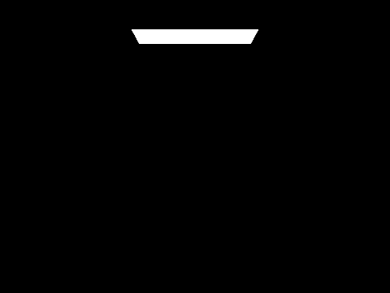 -m 0 |
-m 1 |
-m 2 |
-m 3 |
-m 4 |
-m 100 |
Russian roulette with continuation probability 0.65, accumulated bounces, 1024 samples per pixel, 4 light rays.
With Russian roulette, max_ray_depth becomes an upper limit rather than an exact path length. At -m 0, -m 1 and -m 2 the images match the fixed-depth accumulated renders, since roulette only starts after the first indirect bounce. From -m 3 on, paths are cut short at random, but survivors are weighted by \(1/0.65\), so the images are the same in expectation. Indeed, their mean pixel values match the fixed-depth renders to the first decimal (137.0 at depth 3, 139.7 at depth 4). The payoff is speed: depth 3 took 175 s instead of 194 s and depth 4 took 194 s instead of 241 s, and with -m 100, which in practice means unlimited depth since the chance of surviving 98 roulette tests is \(0.65^{98} \approx 10^{-18}\), the render took 227 s. That is less than the 282 s fixed depth 5 render, and it includes every higher bounce, so it is slightly brighter (mean 141.5 vs. 140.8) without being biased toward short paths. The trade-off is variance: the paths that survive carry larger weights, which adds some noise, mostly in the regions lit only indirectly.
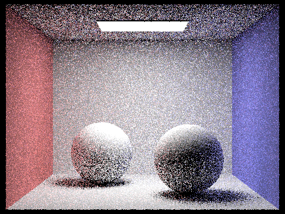 -s 1 |
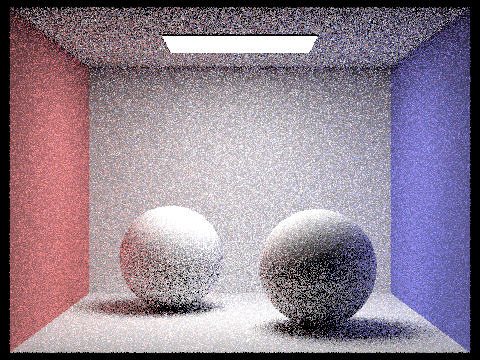 -s 2 |
-s 4 |
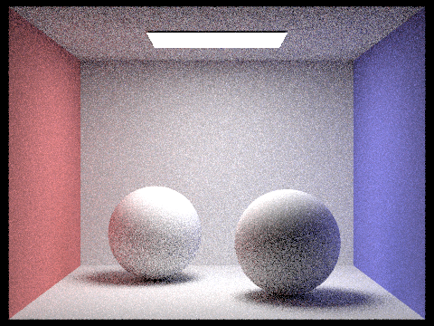 -s 8 |
-s 16 |
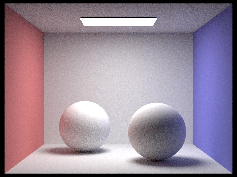 -s 64 |
-s 1024 |
At 1 sample per pixel each pixel is a single random path, so the image is mostly noise: speckled walls and floor, and black and white dots on the spheres, since some paths happen to reach the light and others do not. Each doubling of the sample count shrinks the noise by about \(\sqrt{2}\). By 16 samples the scene is clearly recognizable but still grainy, especially on the ceiling and in the shadows, which are lit only indirectly. At 64 samples the directly lit surfaces are mostly clean and the remaining noise is in the indirectly lit regions. At 1024 samples the image is smooth everywhere, including the soft shadows under the spheres and the color bleeding on them. Render time scales linearly with samples per pixel: 0.18 s at 1, 2.9 s at 16, 11.7 s at 64, and 191 s at 1024. Since noise falls only as \(1/\sqrt{N}\), each halving of the noise costs four times as long, which is the motivation for adaptive sampling in Part 5.
Monte Carlo noise is not spread evenly over an image. A pixel that sees only the flat, directly lit back wall converges after a few dozen samples, while a pixel in a soft shadow or on a surface lit mostly by indirect light needs many more. Adaptive sampling uses each pixel's own samples to decide when it has converged, so the sample budget goes to the pixels that need it.
For a pixel with \(n\) samples whose illuminances \(x_k\) have mean \(\mu\) and standard deviation \(\sigma\), the half-width of a 95% confidence interval for the pixel's true mean is \[ I = 1.96\,\frac{\sigma}{\sqrt{n}}. \] The pixel counts as converged when \(I \le \text{maxTolerance}\cdot\mu\), i.e. we are 95% confident the true value is within 5% (the default tolerance) of our estimate. Measuring the tolerance relative to \(\mu\) lets dark pixels stop once they are relatively accurate, which matches how we perceive brightness.
Implementation. In raytrace_pixel, I keep running sums \(s_1 = \sum x_k\) and \(s_2 = \sum x_k^2\) of each sample's illuminance (Vector3D::illum()), so nothing per-sample needs to be stored. Then \(\mu = s_1/n\) and \(\sigma^2 = \frac{1}{n-1}\left(s_2 - s_1^2/n\right)\) (clamped at zero to absorb rounding error). The convergence test only runs every samplesPerBatch samples, since doing it after every sample would waste time. The loop stops at convergence or at ns_aa samples, whichever comes first; the pixel gets the average of the samples actually taken, and that count goes into sampleCountBuffer to make the rate image (red = many samples, blue = few). Adaptive sampling is on whenever maxTolerance > 0, which is the default; I pass -a 32 0 to turn it off for the fixed-sample renders in the earlier parts.
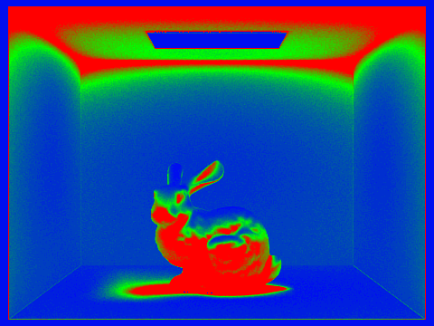 |
|
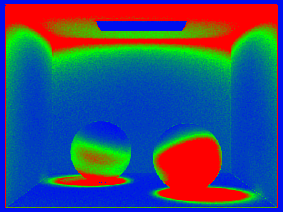 |
Up to 2048 samples per pixel, batches of 64, tolerance 0.05, 1 light ray, max ray depth 5 (-s 2048 -a 64 0.05 -l 1 -m 5). Each took about 65 s on 16 threads.
Both final images are essentially noise-free, and the rate images show where the samples went. The pixels that stop earliest (blue) are the light itself, which is a constant emission value with zero variance, and the walls and floor in direct view of the light, where the light-sampled direct term dominates and varies little between samples. The pixels that use the most samples (red) are ones lit mostly by indirect light or partially shadowed: the ceiling, which only ever receives bounced light; the contact shadows and penumbrae under the bunny and spheres; and the parts of the bunny and spheres facing away from the light. In those regions each sample's brightness depends on a random multi-bounce path, so the variance relative to the mean stays high for many more samples. The upper corners of the walls show a green-to-red gradient for the same reason: the closer a point is to the ceiling, the less direct light it gets, and the more of its brightness comes from indirect light.
I did not do the listed extra credit items. The binned SAH BVH with near-child-first traversal in Part 2 goes beyond the midpoint/mean split the spec suggests, but I am describing it there as my Part 2 approach rather than claiming it for extra credit.
I used an LLM (Claude, through Claude Code) heavily on this homework. It generated the code for all five parts: camera ray generation, triangle/sphere/box intersection, BVH construction and traversal, the diffuse BSDF, both direct lighting estimators, global illumination with Russian roulette, and adaptive sampling. It also wrote the environment-variable render switches and the script that produced every image here, checked the outputs against the reference images in the spec, and drafted the text of this write-up.